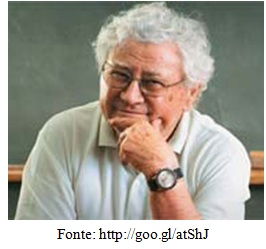

Gerard Vergnaud, nascido em 08 de fevereiro de 1933 na França, formado em Psicologia e doutor em educação matemática, foi aluno no doutorado de Jean Piaget, é doutor honores causa pela universidade de Genebra. Em 1977 elaborou a Teoria dos Campos Conceituais. Foi fundador do Instituto de Pesquisa sobre o Ensino de Matemática (IREM) nas Universidades da França, na década de 60, momento da efervescência do movimento da Matemática Moderna, onde se criaram as condições institucionais que favoreceram a constituição da didática entendida como disciplina científica. De 1975 a 1995 atuou como responsável pelo Centro Nacional de Pesquisa Científica (CNRS) da França. No Brasil, os Parâmetros Curriculares Nacionais (PCN) para o Ensino de Matemática tem como base a Teoria dos Campos Conceituais de Vergnaud.
BARROS, J. A. R. B.et al. As teorias de Guy Brousseau e Gerard Vergnaud como auxílio em uma intervenção matemática. IV Colóquio Internacional Educação e Contemporaneidade ISSN 1982-3657, 2010.